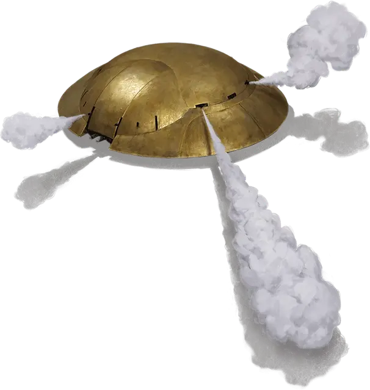

Бозорг-машина
Maschin-i-Bozorg
Большой Конструкт, любое мировоззрение

Класс Доспеха 17 (природный доспех)
Хиты 94 (9к10 + 45)
Скорость 20 футов
| мод | спас | ||
|---|---|---|---|
| СИЛ | 18 | +4 | +4 |
| ЛОВ | 16 | +3 | +3 |
| ТЕЛ | 20 | +5 | +5 |
| мод | спас | ||
|---|---|---|---|
| ИНТ | 2 | −4 | −4 |
| МДР | 10 | +0 | +0 |
| ХАР | 1 | −5 | −5 |
Иммунитет к урону психическая энергия, яд
Иммунитет к состояниям бессознательность, глухота, испуг, истощение, отравление, очарование, паралич
Чувства тёмное зрение 120 футов, пассивное Восприятие 10
Языки понимает Гномий, но не может говорить
Опасность 8 (3900 опыта)
Бонус мастерства +3
Особенности
Перегрев. Когда хиты бозорг-машины опускаются до 0, её двигатель перегружается, на краткое мгновение сильно нагревая внешнюю оболочку. Все существа в пределах 10 футов от бозорг-машины должны совершить спасбросок Телосложения Сл 16, получая 7 (2к6) урона огнём при провале или половину этого урона при успехе.
Действия
Мультиатака. Бозорг-машина совершает две атаки Ядовитым уколом.
Ядовитый укол. Дальнобойная или рукопашная атака оружием: +6 к попаданию, досягаемость 5 футов или дистанция 30/120 фт., одна цель. Попадание: 13 (4к4 + 3) колющего урона и цель должна преуспеть в спасброске Телосложения Сл 16, иначе становясь отравленной на 1 минуту. Цель может повторить спасбросок в конце каждого своего хода. В случае успеха эффект заканчивается.
Струя пара (перезарядка 5–6). Бозорг-машина испускает обжигающий пар 30-футовым конусом. Каждое существо в этой области должно совершить спасбросок Телосложения Сл 16, получая 28 (8к6) урона огнём при провале или вдвое меньше этого урона при успехе.
Бонусные действия
Давящий рывок. Бозорг-машина перемещается по прямой линии на расстояние, не превышающее ее скорости. Во время этого перемещения она может входить в пространство Средних и меньших существ. Существа, в чьё пространство вошла бозорг-машина, должны совершать спасбросок Ловкости Сл 15. При успехе существо отталкивается в ближайшее незанятое пространство вне траектории перемещения бозорг-машины. При провале существо получает 10 (3к6) дробящего урона и сбивается с ног. Если бозорг-машина останавливается в пространстве лежащего ничком существа, то оно также становится опутанным до тех пор, пока не покинет пространство бозорг-машины. Будучи опутанной подобным образом, существо или другое существо в пределах 5 футов от него может действием совершать проверку Силы (Атлетика) Сл 15. При успехе существо маневрирует в незанятое пространство в пределах 5 футов от бозорг-машины по своему выбору.
Описание
Самым значимым изобретением кагу-свирфнеблинов является бозорг-машина: куполообразный боевой Конструкт с паровым двигателем, приводимый в движение множеством колес, расположенных вдоль его плоского днища. Бозорг-машинам чаще всего поручают роль стражей и защитников, неустанно патрулирующих свои посты. Каждая из них повинуется приказам своего создателя.
Бозорг-машины могут перекатываться через противников для того, чтобы давить из своей огромной массой. Они также способны со смертельной точностью стрелять ядовитыми дротиками или поражать существ схожим оружием, прикрепленным к выдвижным рукам, которые убираются внутрь корпуса, и распылять струи обжигающего пара, чтобы отбиться от нарушителей.